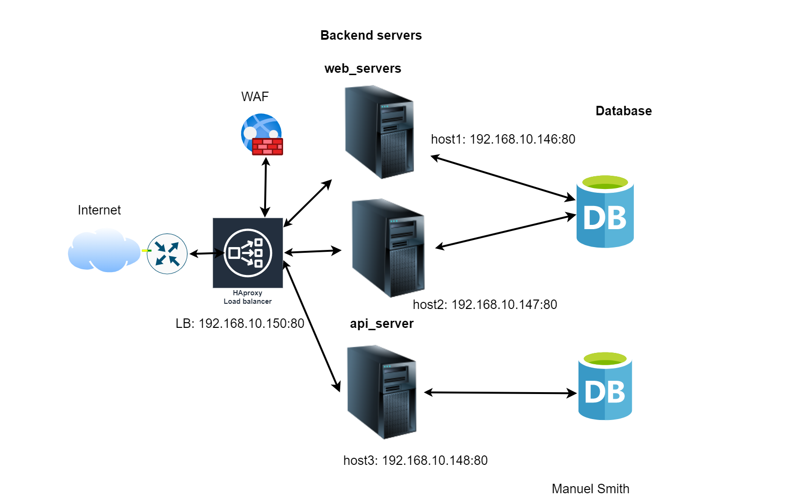

Introduction
To relay inbound traffic across multiple computing resources such as servers, storage devices, or other network devices, we use Load balancers. Load balancers ensure we do not overwhelm resources with multiple traffic requests while others remain idle. This reduces the risk of system failure and improves scalability and overall response time.
HAproxy is one of the fastest and most cost-effective open-source load-balancing solutions. Primarily built in C, accounting for its speed and efficiency.
Load balancing modes in HAproxy
HTTP - Performs content switching, SSL inspection, SSL termination, Session persistence, etc. This mode represents Application layer load balancing.
TCP - Relays traffic to backend servers in a fashion determined by a load-balancing algorithm. Works at layers 3 and 4 of the OSI model. This mode represents Network layer load balancing.
Farm design
In this article, we describe how one may configure HAproxy to route traffic amongst 3 backend servers in a server farm. These servers are; host1, host2, and host3.
Figure 1
Initial configurations
HAproxy runs on most Linux Distros, FreeBSD, and Solaris. This guide assumes you use Ubuntu 20.0.4 LTS or any Debian-based Linux distro that uses apt as its package manager.
Important Notice!
Ensure you have admin privileges and you are the root user.
Reserve port 80 on your server for HAproxy to bind. Otherwise, this setup may not work.
Check if HAproxy already exists using the command:
root@ubuntu:~# haproxy -version
If the command does not return a version number, HAproxy is not installed on your system. You must update your system and upgrade the necessary packages.To update and upgrade your system simultaneously, use the command:
root@ubuntu:~# sudo apt update && apt upgrade
Then install HAproxy using the command:
root@ubuntu:~# apt install haproxy
Congratulations. HAproxy is on your Ubuntu PC.
With the community edition, the default configuration file is in the file path:
/etc/haproxy/haproxy.cfg
This configuration file has four sections; Global, Default, Frontend, and Backend. Instead of using the default configuration file, we will create a separate custom configuration.To create the configuration file in the root directory, use the command:
root@ubuntu:~# vim proxy-conf.cfg
If you do not have vim installed, use this command:
root@ubuntu:~# nano proxy-conf.cfg
In this configuration file, let’s add four sections starting with Global.
Section 1- Global Settings
The global section at the top of the configuration file contains derivatives(settings) that apply to the entire HAproxy instance. These settings affect HAproxy at the lowest level. Since this section is mandatory, one must define it before any other.In the configuration file that we just created, add these commands:
global
maxconn 100000
log /dev/log local0
log /dev/log local1 notice
nbthread 8
daemon
Derivative explanations
maxconn: Specifies the maximum number of connections per second HAproxy should Handle.
log: Specifies the directory where to send logs and the log level.
nbthread: This directive specifies the number of threads each process should use. Each thread runs independently within a process that handles its own set of connections.
daemon: Specifies that HAproxy should run in the background as a daemon.
Important Notice!
The nbthread directive enables multi-threading capabilities in HAproxy, improving the performance and scalability of the load balancer. However, carefully consider system resources and application requirements. Spawning too many threads can lead to excessive CPU and memory usage, slowing the entire system.
Section 2 - Default Settings
The default section in the HAproxy configuration file defines settings(derivatives) that apply to all frontend and backend sections. This setting is optional, but it simplifies the configuration file and prevents the duplication of settings.
Add these settings below the global section of the configuration we created previously.
defaults
timeout connect 10s
timeout client 30s
timeout server 30s
log global
mode http
option httplog
Derivative explanations
timeout: This derivative sets the default timeout values for all frontend and backend sections that do not explicitly define the same setting.
connect - Sets the maximum time a client should wait when connecting to a server.
client - Sets the maximum time a client can be inactive when connected to a server. The load balancer will terminate the connection after this time elapses.
server - Determines how long the frontend should wait for a response from a backend server. The timeout server derivative acts similarly to the timeout client derivative but in reverse.
log: This log file also sets the default log level and destination for all frontend and backend sections that do not explicitly define the same setting. In this example, the global keyword specifies that the log messages should be sent to the global log facility, which is essentially the system log facility.
mode: Specifies configurations for layer 4 and 7 load balancing; http for layer 7 and tcp for layer 4.
httplog: This derivative enables http request logging to the HAproxy log directory. Necessary when one needs to log client metadata like their IP address, requested URL, and HTTP methods like GET, POST, DELETE, and PUT.
Section 3 - Frontend Settings
The frontend section acts as a proxy between inbound traffic and the processing backend servers. One may use this section to define a listening IP address and Port on which clients connect. After the keyword frontend, the name that defines the frontend section follows.
Add the following commands to the configuration file.
frontend cranelux.com
bind 192.168.10.150:80
bind 192.168.10.150:443 ssl crt /etc/ssl/certs/mysite.pem
acl path_api path_beg /api
http-request redirect scheme https unless { ssl_fc }
use_backend api_servers if path_api
default_backend web_servers
Derivative explanations
bind: This directive attaches a listening socket to an IP address and port number. For example, the frontend in the settings above listens for incoming traffic on IP 192.168.10.150 and port 80. The bind directive may also take additional parameters, such as SSL/TLS on port 443.
acl: The acl derivative defines complex conditions for processing requests. Administrators may define different behaviors based on criteria such as URL, client IP address, or HTTP method. In the previous settings, we set the rule path_api that tracks all incoming traffic on all URLs that begin with /api.
redirect: This directive forwards inbound traffic to a different URL or scheme. In this example, the redirect directive forwards requests on port 80 to the equivalent HTTPS URL.
use_backend: This directive specifies which backend to use when you match an acl rule. In the settings above, we send all traffic to the backend api_servers if it complies with the acl rule path_api.
default_backend: This directive specifies the backend to process traffic that does not match any ACL rule. In this example, the default_backend is web_servers.
Section 4 - Backend Settings
This section allows admins to define backend servers and what roles they play. Whenever you create a backend, you must specify its name after the backend keyword.
In the config file that you created, add the following commands.
backend web_servers
balance roundrobin
cookie SERVERUSED insert indirect nocache
option httpchk HEAD /
default-server check maxconn 20
server host1 192.168.10.146:80 cookie host1
server host2 192.168.10.147:80 cookie host2
backend api_servers
server host3 192.168.10.148:80 cookie host3
Derivative explanations
balance: This directive specifies the load-balancing algorithm to distribute the traffic among the backend servers. In this configuration, we’ve used the round-robin algorithm.
option httpchk GET /health: This directive specifies an HTTP health check performed on each server before forwarding the traffic. In this example, the health check is a `HEAD` request to the root directory “/”.
cookie: The cookie parameter in the `server` line sets a cookie on the client’s browser when directed to a specific server. This cookie derivative maintains client affinity or sticky sessions with the same server.
default-server: This derivative sets the default options to all servers within a backend section. The `check` and `maxconn` options in this example apply to all servers in the backend section.
check: This option specifies that HAproxy should periodically perform health checks on all backend servers. If any server fails the health check, HAproxy will stop forwarding traffic to it until it passes the health check again.
maxconn: This option specifies the maximum number of concurrent connections established to a backend server. If the number of connections exceeds this limit, HAproxy will queue the additional ones.
Monitoring
Monitoring enables administrators to gain real-time visibility into the performance and health of the HAproxy load balancer and its applications. The benefits include; Identifying and resolving issues, optimizing performance, and capacity planning.To enable monitoring, add the following command to the global section.
stats socket /run/haproxy/admin.sock mode 660 level admin
stats socket: These directive enables the built-in statistics page in HAproxy, which provides real-time statistics and performance.By default, the statistics page is disabled, but you can enable it by creating a new listen section and adding the following lines.
listen stats
bind :8000
stats enable
stats uri /stats
stats refresh 10s
The listen section displays the monitoring page on port 8000 displayed on the Uniform resource Identifier /stats
.One may open the browser using the link: http://192.168.10.150:8000/stats.
After filling in these settings in the config file, save the file and exit. For vim users, exit using the command :wq after escaping the Insert mode.
Here is the full configuration file:
global
maxconn 100000
log /dev/log local0
log /dev/log local1 notice
nbthread 8
daemon
stats socket /run/haproxy/admin.sock mode 660 level admin
defaults
timeout connect 10s
timeout client 30s
timeout server 30s
log global
mode http
option httplog
frontend cranelux.com
bind 192.168.10.150:80
bind 192.168.10.150:443 ssl crt /etc/ssl/certs/mysite.pem
acl path_api path_beg /api
http-request redirect scheme https unless { ssl_fc }
use_backend api_servers if path_api
default_backend web_servers
backend web_servers
balance roundrobin
cookie SERVERUSED insert indirect nocache
option httpchk HEAD /
default-server check maxconn 20
server host1 192.168.10.146:80 cookie host1
server host2 192.168.10.147:80 cookie host2
backend api_servers
server host3 192.168.10.148:80 cookie host3
listen stats
bind :8000
stats enable
stats uri /stats
stats refresh 10s
Run the load balancer using the command:
root@ubuntu:~# haproxy -f proxy-conf.cfg
Conclusions
After reading this guide, we expect you to set up all four major sections in HAproxy, load balance at layers 4 and 7, and enable monitoring of resources on the load balancer.